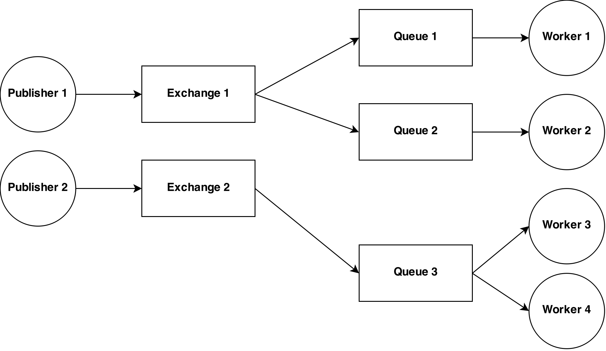

class: center, middle # Using message queue in Rails ### Adam Niedzielski --- class: center ## About me Ruby on Rails Developer @goodylabs twitter: @niedzielskiadam blog: adamniedzielski.github.io --- ##.center[Goals] - split application into a few smaller applications - separate code for concepts which are not logically connected - use new languages and frameworks --- ##.center[One database, multiple apps] - do NOT do it - you either duplicate validations and associations or... - extract it to Rails engine gem, which... - is difficult to maintain --- ##.center[Expose REST API] - usually requests are blocking - requires authentication - everything happens in server process - calling app has knowledge about receiving app --- ##.center[Message queue] - nice abstraction - write to one end, read from the other - asynchronous - flexible format - resistant to outages --- ##.center[When it shines?] - analytics - tasks which are out of server flow such as... - scrapers --- ##.center[RabbitMQ] - popular in Rails world - easy integration, gems available - easy to install - has everything I need :) - possible to scale --- ##.center[Concepts]  --- ##.center[Easy case] --- ##.center[Publishing] ```ruby # Gemfile gem 'bunny' # an initializer connection = Bunny.new(host: 'localhost') connection.start ``` --- ##.center[Publishing] ```ruby # a service class RabbitPublisher def initialize(connection) @connection = connection end def publish(exchange_name, message) exchange = channel.fanout(exchange_name, durable: true) exchange.publish(message.to_json) end private attr_accessor :connection def channel connection.create_channel end end ``` --- ##.center[Receiving] ```ruby # Gemfile gem 'sneakers' # an initializer Sneakers.configure daemonize: true, amqp: "amqp://localhost", log: "log/sneakers.log", pid_path: "tmp/pids/sneakers.pid", threads: 1, workers: 1 ``` --- ##.center[Receiving] ```ruby # app/workers/events_worker.rb class EventsWorker include Sneakers::Worker from_queue "events", env: nil def work(raw_event) event_params = JSON.parse(raw_event) SomeWiseService.build.perform(event_params) ack! end end ``` --- class: center ## Summary blog: adamniedzielski.github.io twitter: @niedzielskiadam .footnote[slides done with remark]